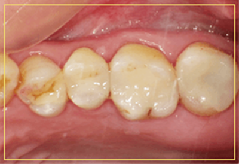
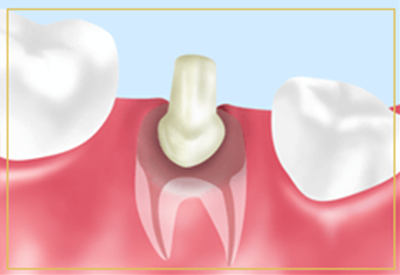

- ホーム
- 審美歯科・ホワイトニング
吉川歯科医院の審美歯科治療・ホワイトニング
歯の治療の目的は「痛みからの解放」だけではありません。「より美しい歯にする」ための治療もあります。世界的にも白い歯は清潔感や信頼感を抱かれやすい傾向が見られます。口元の審美的なお悩みを解消して自信を取り戻される方も少なくありません。
大阪四ツ橋から徒歩2分の吉川歯科医院では、歯を美しく見せる審美的な治療をおこなっております。また、歯の着色汚れが気になる方にはホワイトニング治療もしております。口元を白くすると外から見える印象が変わってきます。口元の審美面にお悩みの方は、当院へご相談ください。
審美歯科～心の健康は美しい歯から～
審美歯科では虫歯や歯周病のようなお口の病気の治療ではなく、白い詰め物や被せ物で表面を自然の歯に近い見た目にする治療を行います。
「審美的な治療」と聞くと、歯を大きく削ることや神経を取り除くことを思い浮かべる方がいますが、そんなことはありません。当院では、できるだけ患者様の大切な歯を残すように最善を尽くして、患者様の口元を美しい歯にして心の健康を取り戻すお手伝いをしております。
吉川歯科医院の3つの審美歯科治療
-
ラミネートべニア
ホワイトニングでは白くできないような黄ばんだ歯の色を改善したり、少しだけ歯並びの乱れを整えたりするために、セラミック製の張り板（べニア）を歯に貼り付ける治療です。
-
セラミックインレー
セラミックインレーとは、セラミックで作られた詰め物（インレー）のことです。従来の詰め物と異なり、天然歯に近い色調を再現できるため外から見て目立ちにくいのが特徴です。また、強度も十分にあるため奥歯に使用することも可能です。
-
セラミッククラウン
セラミッククラウンとは、セラミックで作られた天然歯のような自然な見た目の被せ物（クラウン）です。強度が強いだけでなく、汚れにくいという特徴があります。
セレックシステムについて
セレックシステムは、コンピュータ上で自動的に詰め物や被せ物を製作する機器です。患者様の口腔内データを元に、詰め物や被せ物を即日で製作できます。セレックでは、高品質なセラミックブロックから詰め物や被せ物を削り出します。歯科技工所へ依頼せずに制作できるため人件費が不要で経済的です。
セレックシステムのメリット・デメリット
セレックシステムは歯科技工士を介在させないためスピード感を持って製作できます。また、セラミックのブロックから削り出して被せ物を作るため変形するリスクが低いです。セレックシステム最大のメリットは、コンピュータ上で被せ物や詰め物のデザインを作れることです。また、より適合性の高いデザインに変更できるのも特徴です。
デメリットとしては、材料のコストが高いことです。また、詰め物や被せ物は製作できますがクラウンを製作できないため適用症例が限られています。
セレックシステムの症例紹介
症例1 インレー
金属の詰め物を外し、歯と同じ色を合わせたセラミックの詰め物を装着しました。
Before
After

症例2 クラウン
前歯の歯肉の黒ずみを除去し、色合わせをして、被せ物を装着します。
Before
After
症例3 クラウン
CAD/CAMで一日で色合わせをし、被せ物を装着します。
Before
After
セレックシステムの料金表
-
小さい詰め物 ¥30,000 大きい詰め物 ¥40,000 奥歯の被せ ¥60,000 -
前歯の被せ ¥70,000 前歯張り付け ¥80,000
一人ひとりに適した自然な色みを付ける場合は上記価格より¥5,000の追加料金となります。
※表記価格は税別価格になります。
セレック治療の流れ
コンピュータで歯を作るセレック治療の以下の流れをご紹介します。
- 【1】スキャン（画像スキャン型取り）
- 虫歯を取り除き、治療する部分を削り出したら3D光学カメラを使用して撮影します。従来の型取りのように印象材を使用しないため、型取りが苦手だった方でも不快感を軽減できます。撮影時間はわずか数秒で終了します。
- 【2】修復部設計
- コンピュータ上で、歯の形や咬み合わせを調整して理想的な形に修正します。
- 【3】修復物作製
- ミリリングマシン（CAM）という機械がコンピュータで設計したデータをもとに、セラミックブロックを削り出し、修復物を製作します。
- 【4】口腔内セット
- 削り出されたセラミックの修復物を口腔内へセットします。
審美歯科の5つの取扱素材
吉川歯科医院では、歯の見た目を自然にするのに最適な素材を選んで治療を行っています。
ジルコニア
ジルコニアは金属のように硬いセラミック素材です。自然な白さに仕上がるため、ジルコニアの周りをセラミックでコーティングすると見た目の美しい人工歯になります。
オールセラミック

セラミックだけで作られた被せ物をオールセラミックといいます。天然歯に近い仕上がりになるだけでなく、耐久性も優れ、長年にわたって美しさが続きます。また、本物の歯と同様に光を透過します。
ハイブリッドセラミック
セラミックとレジン（歯科用プラスチック）を混ぜた材料でできています。見た目ではオールセラミックに劣るものの、より安価です。本物の歯に近い適度なやわらかさがあり割れにくいのが特徴です。
ゴールド
18金合金で作られる被せ物のことです。金属アレルギーを起こしにくいため、安全性が高い材料です。
ファイバーコア

ファイバーコアとは、白い樹脂で作った歯の土台のことです。柔らかい材質なので、歯に負担がかかっても折れるリスクが低くなっています。また、光を通しやすいため見た目も天然歯の仕上がりに近いです。
症例紹介（セラミック）
症例1
左上奥3本の金属の詰め物をはずして、3本白い詰め物を装着します。
Before
After
症例2
左下奥歯の虫歯の処置をし、白い詰め物を入れました。
Before
After
審美歯科の料金表
-
ジルコニアクラウン ¥100,000 ジルコニアインレー ¥90,000 オールセラミッククラウン ¥130,000 オールセラミックインレー ¥100,000 ハイブリッドクラウン ¥60,000 -
ハイブリッドインレー ¥40,000 ゴールドクラウン ¥80,000 ゴールドインレー ¥60,000 ラミネートべニア ¥90,000
提携技工所紹介～デンタルクリエーションアート 西村 好美 先生～
当院では、歯科技工所「デンタルクリエーションアート」と提携させていただいております。そこの代表取締役を務めていらっしゃる西村好美先生は、歯科衛生士と歯科技工士のダブルライセンスをお持ちです。
患者様の希望される歯の色味に近づけるため、直接患者様へのご説明や歯の調整をしていただいております。セレックで作られた被せ物もきれいな仕上がりですが、一流の歯科技工士によって作られた被せ物もご満足いただけると思います。
ホワイトニング～美しく自然な白い歯に～
歯の黄ばみの原因となるものは、加齢や汚れ・遺伝などです。毎日の食事で好んで着色成分が強いものを摂り続けると、歯の表面に汚れが付着するだけでなく、エナメル質にも汚れが沈着してきます。
また、エナメル質自体がが加齢や日常受ける刺激で薄くなってくると、エナメル質の下層にある象牙質のもともと黄みがかっている色が透けてみえるようになり、歯の黄ばみが強く映ります。
表面の汚れの色は、日々のブラッシングや定期的な歯のクリーニングで落として解消することができますが、歯に沈着している汚れや色素は色素の漂白をおこなったり、象牙質の黄ばみをマスキングしたりするホワイトニングが必要です。
吉川歯科医院の3つのホワイトニング治療
ホワイトニング治療は患者様のライフスタイルや目的に合わせて3つのメニューからお選びいただけます。
ホームホワイトニング
ホームホワイトニングとは、ご自宅や職場でできるタイプのホワイトニングです。最初に歯科医院でマウスピース製作をする必要がありますが、一度マウスピースを製作すればお好きな時にご自身でホワイトニングをしていただけます。使用するホワイトニング剤は低濃度なものなので、理想の白さを実感するまで時間がかかりますが、元の色に戻りにくいというメリットがあります。
プチホワイトニング
プチホワイトニングとは、一回20分前後の短時間でおこなうタイプのホワイトニングです。安く、早くキレイな歯になりたい方に向いています。ホワイトニング施述後は、色の濃い飲食物（カレー・コーヒー）などを24時間は避けるようにしてください。
- 安い！
- 早い！
- キレイ！
| 時間 | |
| HOME | 1日 2時間 |
| プチ | 1回 15分～20分 |
再着色について
ホワイトニング後の後戻り（再着色）は個人差があります。お気軽にご相談ください。
オフィスホワイトニングの流れ
オフィスホワイトニングとは、歯科医院で施術するタイプのホワイトニングです。高濃度のホワイトニング剤を歯に塗布して特殊な光を照射することで薬剤を活性化させます。高濃度なホワイトニング剤を使用しているため、数回の施術で白さを実感できるのが特徴です。結婚式や成人式などイベントごとを控えている方におすすめしております。
-
- 【1】 お口を開けたまま固定します
-
- 【2】 歯ぐきや唇を保護します
-

-
- 【3】 歯の表面にジェルを塗布します
-
- 【4】 光を照射します
-
- 【5】 ホワイトニング終了です
-
別の日にも施術をおこない、少しずつ白くしていきます。
ホワイトニングの料金表
| オフィスホワイトニング | ¥60,000 |
|---|---|
| ホームホワイトニング | ¥30,000 |
| プチホワイトニング | ¥3,000 |
※表記価格は税別価格になります。